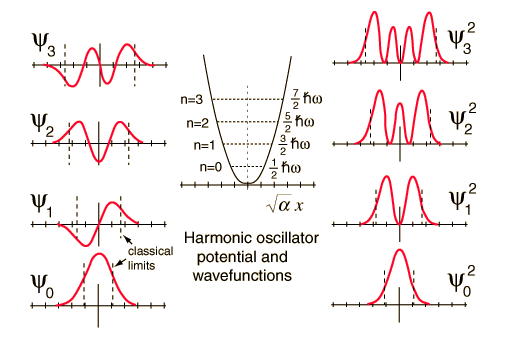
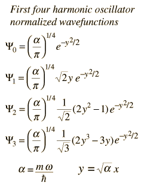
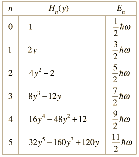

Quantum Harmonic Oscillator: Wavefunctions
The Schrodinger equation for a harmonic oscillator may be solved to give the wavefunctions illustrated below.

|  | The solution of the Shrodinger equation for the first four energy states gives the normalized wavefunctions at left. These functions are plotted at left in the above illustration. The probability of finding the oscillator at any given value of x is the square of the wavefunction, and those squares are shown at right above. Note that the wavefunctions for higher n have more "humps" within the potential well. This corresponds to a shorter wavelength and therefore by the deBroglie relationship they may be seen to have a higher momentum and therefore higher energy.
The most probable value of position for the lower states is very different from the classical harmonic oscillator where it spends more time near the end of its motion. But as the quantum number increases, the probabability distribution becomes more like that of the classical oscillator - this tendency to approach the classical behavior for high quantum numbers is called the correspondence principle. |
|  | When the Schrodinger equation for the harmonic oscillator is solved by a series method, the solutions contain this set of polynomials, named the Hermite polynomials. |
The wavefunctions for the quantum harmonic oscillator contain the Gaussian form which allows them to satisfy the necessary boundary conditions at infinity. In the wavefunction associated with a given value of the quantum number n, the Gaussian is multiplied by a polynomial of order n (the Hermite polynomials above) and the constants necessary to normalize the wavefunctions.
|
Index
Schrodinger equation concepts
References
Beiser, Perspectives
Sec 8-7
Thornton & Rex
Sec 7-6 |